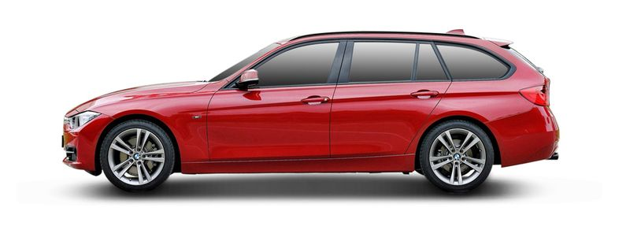

auto
doc
Search
My Garage · Sign in

BMW 3 Touring (F31) 328 i xDrive
2016 · Petrol · 245 hp · car_id 59402
Vehicle details
Change
BMW / 3er Reihe / 3 Touring (F31) / 328 i xDrive
Top parts categories for the BMW 328 i xDrive Petrol 245 hp
Далее
▾
Please select the appropriate car parts category
Текущий каталог
Новый вариант: меню слева
Quick search by category
Quick search by category